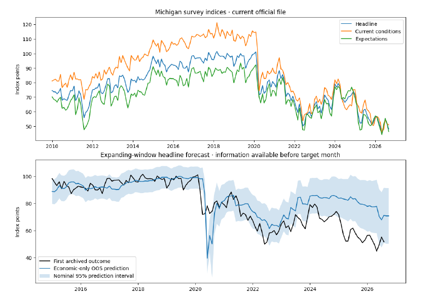
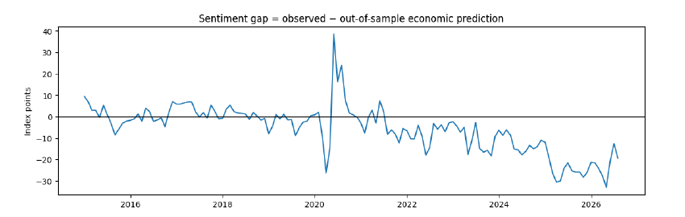

The research question
Can news and social-media measures help explain why consumer sentiment is weaker than economic indicators would suggest?
I built a reproducible monthly framework around the University of Michigan consumer sentiment index, economic conditions, and indicators extracted from news and public X posts. The goal was to evaluate incremental forecasting information, not infer a causal media effect.
Establishing the economic baseline
The baseline uses monthly unemployment, year-over-year headline PCE inflation and real GDP growth, with data beginning in 2010. Forecasts account for release timing and archived revisions; the latest available quarterly GDP value is carried forward rather than interpolated.


The economic model overpredicts sentiment particularly after 2020. The mean gap is −6.08 index points over 137 common evaluation months. Adding cumulative-price controls improves accuracy, while persistence offers a substantially stronger benchmark.

Building a media corpus
Economic headlines were retrieved through GDELT BigQuery from selected national and local outlets, alongside historical X posts from October 2019 through October 2026. Shared search terms span employment, prices, income, growth, housing and household finances.
To control labeling costs, the scoring cohort sampled up to ten news headlines per outlet per month and 100 X posts per month, supplemented by human-validation examples. Keyword selection, uneven coverage and incomplete scoring mean this corpus measures content supply, rather than representative media consumption.
From text to measurable indicators
I classified economic coverage along four predefined dimensions using structured AI outputs and supporting evidence excerpts.
| Dimension | What it measures |
|---|---|
| Economic tone | Positive, negative, neutral or mixed conditions |
| Salience | Attention to specific economic developments |
| Framing | Price levels versus rates; household versus aggregate conditions |
| Political attribution | Explicit credit or blame for economic outcomes |
Emotional language is recorded separately from economic tone. Evidence checks flag inconsistent or unsupported labels. A dictionary baseline and human annotations provide comparative validation: AI reached 71.4% three-class accuracy on 35 comparable labeled headlines, versus 40.0% for the dictionary, but both achieved 40.0% on the ten original held-out examples.
Source-label sensitivity testing changed at least one classification in only two of 50 paired headlines; this small test does not establish source invariance.
Does media improve forecasts?
Expanding-window comparisons use 46 common forecast months from November 2022 through August 2026, with media measures lagged one calendar month.
| Specification | RMSE | MAE |
|---|---|---|
| Economics only | 12.82 | 10.77 |
| Economics + media | 12.62 | 10.79 |
| Economics + media + controls | 12.11 | 9.54 |
| Economics + persistence | 5.02 | 4.20 |
| Economics + media + persistence | 5.08 | 4.26 |
| Economics + media + controls + persistence | 5.32 | 4.54 |
| Last available sentiment | 4.60 | 3.72 |
Media reduces economic-only RMSE by approximately 1.6%, but does not improve performance once persistence is included. Estimated associations with X negativity weaken after accounting for persistence and do not survive multiple-testing correction.
What the evidence supports
Economic fundamentals explain only part of sentiment; persistence is difficult to beat, and incremental media information is limited.
Classification error, incomplete scoring, small human-validation samples and uneven coverage constrain inference. Without respondent-level exposure data or credible identification, the study cannot establish that media causes pessimism or that unexplained sentiment reflects cognitive bias.
The pipeline and dashboard provide a foundation for continued monitoring and future validated comparisons of media framing.